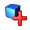

Metadata Extraction Tool User Guide
Version 2.0
What is the Metadata Extraction Tool
The metadata extraction tool is a tool built by Sytec Resources for the National Library of New Zealand to process digital master files and extract metadata about those files. Metadata is descriptive information about an object - not the object itself. In this case metadata information about a Image would be things like size, colours, resolution, etc& There are four output formats that an output metadata file can take
1. Native form. A XML (Extensible Mark-up Language) file based on a DTD (Document Type Definition) that reflects all information available from the digital master.
2. Preservation metadata. Contains descriptive information extracted from the digital master file. The DTD for this XML format is pmeta.dtd.
3. Descriptive metadata. Contains information about a file that can be read from the file system. The DTD for this XML format is dmeta.dtd.
4. National Library Preservation Metadata Data Dictionary - nlnz-presmet.xsd. This is the primary format.
For more information about any of these file formats see the Solution Architecture or Software Architecture documents for this extraction tool. Of the above formats, demta.dtd and pmeta.dtd have been deprecated, they are not fully supported for all types of input file.
Installation
Installation of the tool is performed by copying the folder 'deploy' from the accompanying CD to a directory of the users choice on the local file system. Before running the application several configuration tasks must be performed:
1. The config.xml file attributes need to be made write enabled. To do this right click on the file in windows file explorer and select properties. In the properties file unclick the checkbox labels 'read-only'. This will allow the user to make changes to the application configuration.
2. Run the tool and add adapters and mappings as required.
3. A suitable Java Runtime Environment must be installed and configured (JDK1.3.1 or later)
4. Create the directories that are specified in the config.xml file for the destination of extracted metadata files. Defaults of c:\temp\<folder> are specified.
A correctly configured Java Runtime Environment will allow the user to double click on the NLNZ.jar file to execute the application. To run the application in an environment where the Java Runtime Environment is not configured to execute jar files use the command: java -jar NLNZ.jar
Graphical User Interface
The software will be driven by a graphical user interface and a command line interface. Both will access the underlying extraction tool in an identical way (using the same configuration). The graphical user interface will allow the user to select files for processing and process them according to a predefined configuration. The predefined configurations (see: configuration) will specify the output format and the output directory that will hold the extracted files. The user interface is designed to be fully compliant with current Win32 best practice for GUIs. One of the features of the User interface is the capability to alert the user to errors that may have occurred during the extraction process.
Key controls of the software:
 Create New Object
Create New Object
Allows the user to create a new object. An object is a logical grouping of files and is the first step to creating a list of files to be harvested for metadata.
 Add Files/Folders to Object
When the user pressed the 'add' button a file dialog will appear to allow the user to select as many files as they wish to process. The files that have been selected will appear in the files list in the middle of the main screen.
 Remove Files/Folders
from Object
Remove Files/Folders
from Object
The remove button will remove all selected files from the files table.
 Remove All Files/Folders
and Objects from the list.
Remove All Files/Folders
and Objects from the list.
Removes all files/folders and object from the file list.
Edit the properties of an Object
The 'Object' folders (the highest level folders) have properties associated with them. The properties editor allows the user to change these.
The dialog you will be presented with looks like the image shown here. You can edit any property of an object using this dialog. You may notice some fields go 'red' while typing - this is because the field validation has determined that the field contents are incorrect.
 Process all of the
Objects in the list
Process all of the
Objects in the list
The process button will process all files currently in the files list. The results of the processing will be output to the directory specified by the currently selected Config. Any errors will be highlighted with a red exclamation point icon appearing as the icon of the erroneous file. Files that were processed without any errors are given a 'tick' icon and files that are yet to be processed are given plain icon. The Graphical User Interface is multithreaded - this means that processing can take place and the UI does not appear to 'lock-up'.
View Usage/Error Log
Pops up a log window for usage and error reporting. Logs can be filtered in this window so that only log messages with the log 'level' desired are shown. Old logs may be viewed in this window also with the 'open' log file function.
 View Scheduling Window
View Scheduling Window
Pops up the scheduling window to allow scheduling to be queued up to happen at a later time. If processing is scheduled the application will suspend operation until the allotted time.
 View Administration Window
View Administration Window
Pops up the administration window. This is a series of tabs which allow the user/administrator to configure all aspects of the harvesting application. See administration below.
 View simple help
View simple help
Pops up a window that displays help, Help is not context sensitive and does not go into substantial detail.
 Exit the Application
Exit the Application
Exits the application, saving the configuration if you have changed it (users, destination directories, etc...)
 Extraction
Configuration
Extraction
Configuration
The available configurations are listed in a drop down box labelled 'Config' these configurations can each have a different output directory, which is indicated immediately to the right of the drop down box.
 Destination
Folder
Destination
Folder
The destination folder that output files will be sent. You can change this setting by clicking on the folder icon to the right of the text field. The field itself is not editable.
 User Selection
User Selection
You can select the user that is currently performing the extraction of metadata. If the output schema supports a user field, the value will be inserted into the harvested metadata.
When creating an Object or Adding files to an existing object you will be prompted with a dialog to select files or folders. You can select any number of files or folders and add them all to the current object. The recurse option will force the file adding process to traverse all subfolders within a selection. The flatten option will force the adding process to ignore folder boundaries while recursing and add all the files found at an equal level within the current object.
Administration
The administration window is a series of tabs which allow the user/administrator to configure all aspects of the harvesting application.
 General
Tab
General
Tab
This screen allows the user to manage profiles and change settings of the currently selected profile. A profile is used to easily store some settings to be used again in the future without having to recreate everything for a future harvesting run. Configuration elements within the profile are the input directory, the log directory and which adapters are currently enabled for harvesting.